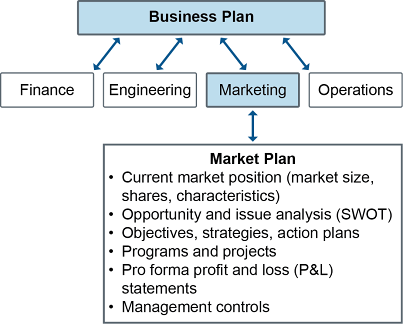
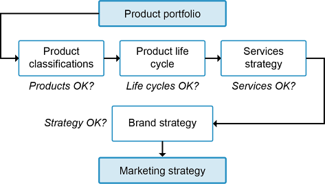
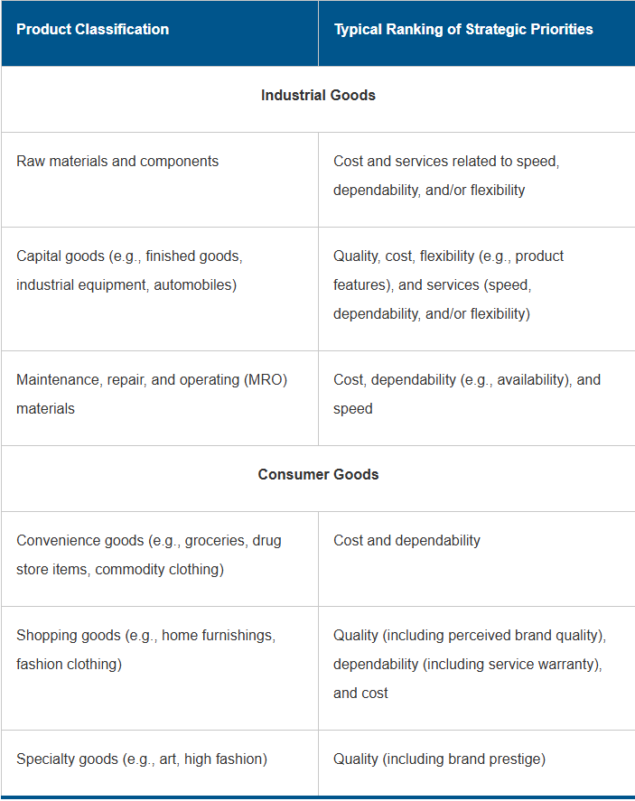
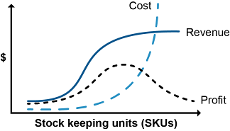
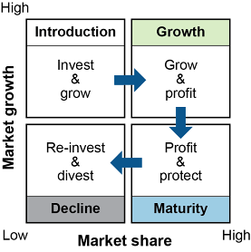

Demand analysis tools include SWOT analysis, market research, and product assessments.
Demand Analysis Road Map
Strategic, tactical, and operational plans can run right into the brick wall of a harsh economic climate, changing tastes, a competitor with superior offerings at lower prices, or a new government with new priorities or regulations. Therefore, an environmental scan is needed to validate the current plans. The idea is to develop organizational and related supply chain strategies, tactics, and operations that are flexible enough to adopt changes quickly as demanded by the situation.
The organization can exercise some degree of control over demand at the tactical and operational levels, however. It can influence demand by changing tactics, such as by changing prices, promotions, and customer or employee policies/procedures. At the operational level it can exert control by managing and prioritizing demand.
At the long-term strategic level, tools such as a SWOT analysis can be used to look inward at the organization’s strengths and weaknesses and outward at opportunities and threats.
At the long-term strategic level, tools such as a SWOT analysis can be used to look inward at the organization’s strengths and weaknesses and outward at opportunities and threats. A medium- to short-term demand analysis will include market research to identify external influences on demand. Marketing can use this information to determine how to influence that demand, since marketing efforts can have an impact on demand at this level. The process may also include an assessment of the organization’s product and service offerings to see if changes are needed to what is being offered.
Before looking at these demand analysis tools, let’s explore how demand analysis fits into the big picture.
Processes for Procuring and Delivering Goods and Services
Demand needs to be planned (analyzed and forecasted), communicated, influenced, and prioritized. Operations planning and control then links supply with demand. Inventory management methodologies need to be selected and supply analyzed using tools such as total cost of ownership or make-versus-buy analysis. Logistics, including warehouse management, capacity forecasting, materials handling, transportation, and delivery patterns are then planned and executed based on the consensus picture of supply and demand.
The key processes that supply chain managers need to be able to perform related to procuring and delivering goods and services are
Developing supply chain personnel’s knowledge, skills, and abilities
Developing supply chain infrastructure
Performing supply and demand planning and scheduling
Identifying logistical requirements
Developing logistical capabilities to support delivery of goods and services
Executing the plans.
The following is a general overview of these processes.
Developing Supply Chain Personnel’s Knowledge, Skills, and Abilities
The process of developing supply chain personnel’s knowledge, skills, and abilities involves the following steps:
Setting learning goals with one’s manager
Providing opportunities for independent learning, including certification
Developing formal or informal coaching or mentoring programs
Providing access to training courses as needed for specific skills or industry-specific knowledge
Meeting periodically to assess goal progress and set new goals
Developing Supply Chain Infrastructure
The process of developing the supply chain infrastructure involves the following steps:
Completing design of the supply chain infrastructure, including relevant total cost of ownership and make-versus-buy analyses
Completing supply chain infrastructure or process development projects for manufacturing or service delivery, logistics (including warehousing and transportation), and information and funds flows
Staffing new roles
Providing training on new processes or systems
Using change management to ensure that processes and systems are fully adopted in policies and culture
Working toward desired supplier and customer relationships
Developing supplier and customer contracts
Implementing, monitoring, and controlling agreed-upon supplier and customer relationships
Performing Supply and Demand Planning and Scheduling
Influencing other business functions toward a shared view of demand management
Planning, communicating, influencing, and managing and prioritizing demand
Analyzing and then forecasting demand
Servicing orders
Influencing customers to buy or influencing them to alter purchases if there are supply and demand imbalances
Performing master planning, including resource planning (long-term capacity)
Performing sales and operations planning to develop a consensus plan as an input to master scheduling
Reviewing performance
Evaluating demand levels
Evaluating supply capability
Reconciling demand, supply, and financial plans
Planning inventory
Performing master scheduling to produce the master schedule and rough-cut capacity plan (medium-term capacity)
Performing material requirements planning
Performing distribution requirements planning for inventory
Performing capacity requirements planning (detailed production capacity)
Forecasting and planning warehouse and transportation capacity
Identifying Logistical Requirements
The process of identifying logistical requirements involves the following steps:
Determining logistics objectives and considerations
Determining warehousing objectives and considerations
Specifying warehouse capacity requirements
Specifying materials-handling requirements
Determining transportation objectives and considerations
Selecting preferred modes of transport
Balancing warehousing, transportation, and other logistics requirements
Developing Logistical Capabilities to Support Delivery of Goods and Services
The process of developing logistical capabilities to support delivery of goods and services involves the following steps:
Completing projects related to logistics, including warehousing and transportation processes, infrastructure, and equipment
Staffing new roles
Performing training on new processes, infrastructure, and equipment
Using change management to ensure that logistical capabilities are incorporated in policy and culture
Selecting logistics service providers
Developing contracts with logistics service providers
Executing the Plans
Performing production activity control
Measuring, managing, and controlling capacity
Controlling inventory
Monitoring and controlling delivery patterns and transportation modes
Monitoring and controlling third-party service providers
Expediting supply and transportation processes
Complying with all legal and regulatory requirements
SWOT Analysis
SWOT stands for Strengths, Weaknesses, Opportunities, and Threats. It is a tool useful for strategic planning as well as long-term demand analysis. As seen in Exhibit 1-11, the SWOT analysis is usually in the form of a quadrant in which distinctions are made between internal versus external focus and positive versus negative points.
Exhibit 1-11: SWOT Analysis

How are each of these determined?
Internal strengths and weaknesses are typically derived from comprehensive data collected about the organization. This may include information on skill sets by function, professional development and training activities, facilities, the company’s reputation or standing in the community, etc. Ideally input from external customers and suppliers provides substantiated evidence, as to weaknesses in particular, which can then be appropriately addressed.
External opportunities and threats are based on market trends and risk analyses. Environmental scanning may be required to assemble data on external forces. This involves collecting and analyzing external data on market forces; demographic changes; changing customer needs; competitor pricing and offerings; current and emerging technology; new taxes, laws, and regulations; and social, political, and economic conditions.
Opportunities can be acted upon to help move an organization toward achieving its goals. However, if those opportunities are ignored or improperly developed, they can transform into threats (like IBM giving Bill Gates the green light to market his disk operating system [DOS] because they weren’t in the “software business”). Other opportunities may arise from competitors’ activities or products or new markets or from other data seen during environmental scanning.
Threats are defined as risks that can impact a company negatively if they are not handled appropriately. External risks include unforeseen events outside the control of an organization that can diminish productivity, profits, or market share, for example, the March 2021 grounding of the ship Ever Given that fully blocked the Suez Canal for six days and held up nearly $10 billion in trade per day. Of course, there can be internal threats that arise due to a company’s actions, such as overzealous geographic expansion or excessive outsourcing.
This valuable information feeds into a written document called the market plan.
Market Research
When engineers design a product, they don’t necessarily have anything in mind other than overcoming technical challenges. They assume that others will appreciate the beauty and usefulness of their creations. This, however, is not necessarily the case.
Someone must act as a liaison between the manufacturers (product specialists, technicians, engineers) and the potential consumers who either will, or will not, buy their products, and marketing is all about customers. Marketing plays a role in finding, forecasting, influencing, and sustaining demand—from the product concept to the end of the product’s life cycle. Marketing and sales have different but complementary objectives. Marketing translates the external perspective for internal audiences (What does the market need?), while sales translates the internal perspective for external audiences (Why do you need what we have to offer?)
In order to design a supply chain that can meet its ultimate goal of delivering the right product at the right place and time and at the right price, it’s important to understand the marketplace.
Marketing can do these tasks with in-house personnel and/or by contract with an outside company. Market research can begin when the product is merely a sketch or the inkling of an idea. It can also take place for an existing product or service, especially one that seems not to be living up to its sales potential.
In order to design a supply chain that can meet its ultimate goal of delivering the right product at the right place and time and at the right price, it’s important to understand the marketplace.
Market Plan
the current market position, opportunity and issue analysis [SWOT results], marketing objectives and strategies, action plans, programs, projects, budgets, and pro forma profit and loss statement and management controls.
The market plan is a subset of the organization’s strategic business plan, which drives several important functions like finance, engineering, marketing, and production. These functions also have input in shaping the overall business strategy. Here we’re going to focus on the marketing function and how it provides foundational information about the marketplace. Knowing your market, customers, competitors, and product can heavily influence how you design your supply chain to meet long-term objectives.
The marketing function develops its own strategically oriented plan based on the strategic business plan. These plans must be in alignment and there should be consistency between them.
As seen in Exhibit 1-12, the marketing strategy is based on a number of key elements.
Exhibit 1-12: Marketing Strategy and Plan

Current market position information may include data and findings about demand patterns, products and pricing, customer satisfaction, and service level agreements with partners, distributors, and retailers. (Note that a profit and loss statement is another name for an income statement. Pro forma means that the statement is based on forecasted information rather than historical information.)
When designing a supply chain, one must carefully consider the market plan. For example, if the market plan shows that Europe will be the primary source of demand for product X, it may make sense to assemble that product in the Netherlands instead of China, despite comparatively higher labor costs. By assembling a product in Europe, import duties may be much lower than for importing a finished product. (For example, Tesla assembles battery-powered cars in Tilburg.) The shipping volume of the parts may also be much smaller than the shipping volume of the finished products, so postponed assembly can save money in transportation costs.
In addition, one must keep in mind that marketplace factors may evolve over time, and, if they do, that may require modifications to the design of the supply chain and its organization.
Market Research and Its Types
Market research is “the systematic gathering, recording, and analysis of data about problems relating to the marketing of goods and services.” Also referred to as marketing research, it may be done by impartial agencies, business firms, market research agents, or an internal marketing staff.
Market research can use a variety of information-gathering tools, such as customer surveys, interviews, focus groups, direct mail questionnaires, websites providing opportunities or incentives for visitor feedback, and market reports sold by research firms. The internal marketing department staff can also do research about potential markets, products, etc. The SWOT analysis is commonly used for this purpose.
Market analysis: the study of the size, location, nature, and characteristics of markets (for example, product potential), resulting in information useful for market segmentation (i.e., distinct lines of business to offer).
Consumer research: the discovery and analysis of consumer attitudes, reactions, and preferences (including motivation research), resulting in information useful for customer segmentation (i.e., categorizing customers in various ways, such as by their requirements or the types of products and services they demand).
Sales analysis and consumer research are addressed more elsewhere. More information on market analysis follows.
Market analysis assesses the state of the global, local, and industry economy, the impact of recent events or disasters, and the relative market share that the organization has in a given region at present. Market conditions can be considered challenging when the organization needs to break into a market dominated by other competitors or when the prospective customers are less likely to make a purchase because of the state of the economy. In such situations, the organization’s competitive strategy needs to show how the organization’s offerings will have a clear competitive advantage.
During times of recession or when working to make inroads against an established competitor in a region, an organization can look at these challenging situations as an opportunity to capture significant market share. To do so, it will need to satisfy customer requirements more completely or at less cost than its rivals. Another strategy that often works during recessions is to purchase organizations that are showing signs of weakness at a discount. This can help an organization grow into new global markets.
Information on market conditions can be found from government or third-party reports, surveys, or white papers on economic conditions. Some of these reports make predictions based on leading market indicators or confirm trends using lagging market indicators.
Purposes of Market Research
The purposes of market research include finding potential markets, analyzing markets, and refining product design to fit the markets.
Finding potential markets. The most basic question about a product is “Does anyone care?” Is there a significant and unmet need out there for the better product? In an existing company, the sales force may provide the first clue that current customers have unmet needs that seem compatible with the company’s mission. Market research can begin from that point to quantify the need. The process can also begin among the engineers—the folks who look at the current products and see a way to improve them. In that case, marketing and sales can present the idea to current customers to see if there are any signs of interest. They can also begin a wider research campaign to identify the potential for new markets for the suggested product.
Analyzing markets. As product design gets underway, marketing can ask more detailed questions about the potential market to divide the market into segments, as is discussed elsewhere in a section on segmentation. As stated there, the basic questions are the best questions: Who? Where? When? Why? What? How many? The answers to such questions constitute market segmentation.
Once you know who and where the likely customers are, you can ask how best to reach them with news about the product. Do they shop at a large retail chain store or at the local hardware store? Do they buy from catalogs or over the internet? Is telemarketing the best way to reach them?
Marketing personnel can find out why and how prospects are interested in your product by using phone surveys, online questionnaires, focus groups, analysis of past customer complaints or feedback, or a combination of those approaches. Marketers also want to know when prospects are likely to start buying. Are they ready for the new product, or will market penetration take some time as your prospects get used to the new idea? Will the product have a long or short life cycle? How often will it need to be replaced? How soon will customers demand an upgrade?
Demand forecasting is a marketing and sales activity. In collaborative arrangements, such as vendor-managed inventory (VMI) and collaborative planning, forecasting, and replenishment (CPFR), the forecasts need to be shared with cross-functional and intercompany teams to ensure that everyone works from the same forecasting information.
Remember: When it comes to forecasting demand, marketing has a natural bias toward optimism—a bias that may be magnified by top management policies. (Management seldom looks favorably on cautious estimates.) Demand plans based on overly optimistic forecasts can lead to problems. Most obviously, it can cost money if the company increases capacity to meet the demand plan and winds up with unnecessarily large capital expenses and/or inventory hangover. An optimistic bias in marketing can also lead supply areas to distrust the demand plan and compensate by coming up with their own plans, which may well be biased in the other direction. Cross-functional teams and supply chain collaboration can overcome such problems.
Refining product design. As market researchers learn more about market and customer segments, the information should contribute to the product’s design. Market research into customer attitudes can help identify features of the product, including a strategic price that will be most attractive to the various customer segments. Some prospects may strongly feel that the new product should contain certain features, while others desire the opposite features. The features that positively contribute to the profit margin should be adopted, and unprofitable variations should be avoided. A proliferation of SKUs (stock keeping units) typically increases inventory overhead and dilutes marketing efforts.
In some cases a product’s features can be varied to match differences in market requirements. For example, computers can be assembled with different components to meet the specialized needs of various segments. A basic version will appeal to customers with limited funds or limited computing needs. Add a powerful processor and sophisticated subsystems, and your basic computer appeals to “power users.” Add a choice of colors and shapes, and you add value for the style-conscious buyer. Other products will not be as profitable with multiple variations, and the marketing input to design will be identification of the most profitable segments.
At this point, researchers can also contribute to the reverse supply chain aspect of product design. What sort of support will be necessary to satisfy end users and keep them as loyal customers? Will they need product documentation? How many languages will be necessary in the pamphlets? Will phone, text, or email support options be necessary? What will be the return policy? What is the attitude of potential customers to ease of disposal and impact on the environment?
Competition
Organizations need to scan the market for what the competition is offering and at what price. They need to know who has what market share in each region in which they would like to compete and whether there are any customer requirements that are going unsatisfied. For example, Haier found that since the power went out frequently in many African countries, there was an unsatisfied demand for a freezer that could stay cold for a long time. They developed a frost-free refrigerator that could keep food frozen for 100 hours without electricity. This helped them keep the majority of the market share in Nigeria.
Getting a foothold in areas where the competition already has established strong market share requires a well-thought-out strategy.
Getting a foothold in areas where the competition already has established strong market share requires a well-thought-out strategy. When attempting to get a foothold selling mini-fridges in the U.S., Haier started by negotiating contracts with large retailers, including Walmart, Best Buy, and Home Depot. However, a good strategy that is poorly executed can still result in failure.
One way to get an idea of the competition’s strategy is to use benchmarking. SWOT analysis can also be used to get an understanding of the organization’s current state of supply chain maturity. Other environmental scanning could involve determining how mature competitors’ supply chains are relative to one’s own supply chain. What your organization believes is a world-class supply chain may in fact be surpassed by other chains.
Global Perspectives
Global connectedness is causing supply chain management to evolve into a more strategic role. Managers recognize that the actions taken by one organization in the supply chain can influence the success of the rest of the network. While in the past the strategic focus for many organizations was on improving their internal quality and reducing costs, the focus for many now is on implementing total supply chain solutions that require collaboration from partner organizations both upstream and downstream.
These new global forces are being met by corresponding technological solutions in supply chains in most nations. Collectively they are revolutionizing supply chain management.
Here are some of the powerful forces that impact virtually every supply chain:
Global expansion.
The globalization of sourcing and manufacturing is making supply chains longer and more complex than ever before, thereby requiring more formal coordination and collaboration. Many manufacturers and retail chains have expanded both nationally and globally, creating the need for more formal mechanisms to coordinate supply chain activities. In addition, companies that have created their own e-commerce sites can now have global exposure.
Increased project complexity and scope.
Project size and complexity are increasing. Projects involve, in some cases, large teams operating at different remote sites. Moreover, the information involved is more important than ever, in larger amounts than ever, and more difficult than ever to manage manually with the required speed and accuracy.
Greater market volatility.
Demand is becoming more volatile and harder to predict due to the increasing power and speed of information available to both consumers and competitors.
A successful global organizational strategy will account for these complexities while developing a deep understanding of local customer requirements. This understanding often requires investing in local managers, experts, and salespersons to develop local sales channels that are attuned to the differences in the given region. Haier has done all of these things in each market it enters, but it keeps track of each region using the standardized measurements of the SCOR® model (a framework for supply chain management), looking at the organization’s flexibility, velocity, and predictability, among other things. This way Haier can compare success region to region.
A globalized organization will also need the flexibility to withstand global disruptions. The disruption of just one critical link in a globally interconnected supply chain can impact the whole. When the 8.9 magnitude earthquake and resulting tsunami hit Japan and damaged their Fukushima Daiichi nuclear plant in March 2011, initial concerns and the world’s focus were on the people of Japan. As the weeks progressed, it started to become clear in just how many ways we are all connected. Factory operations were affected, raising fears of shortages or price increases for a number of widely used components. Manufacturers were affected by disruptions of the transportation of finished goods to airports or ports as well as the movement of employees and supplies to production plants. Concerns grew that the earthquake and tsunami could lead to a long-term disruption in the world’s supply of automobiles, consumer electronics, and machine tools. As millions of people around the globe extended their condolences to the people of Japan for the lives lost and suffering, companies around the globe had to quickly assess whether their business would be impacted by this tragedy thousands of miles away.
Even after this and other major crises and disasters (the wildfires in California and Colorado in 2020, the record 30 named storms in 2020 with five consecutive years of at least one category 5 hurricane), some companies are hesitant to realize that with the global economy, actions in one part of the world, whether planned, unplanned, human-induced, or naturally occurring, seem to affect us. We are all connected.
Our goal is to prepare you to grasp these concepts, be confident in your actions, and eventually thrive in the world of supply chain management. Remember that “the beginning of knowledge is the discovery of something we do not understand” (Frank Herbert, science fiction author and writer, 1920–1986).
Product Assessments
The product portfolio needs be reviewed early in demand management to determine whether the organization’s products and services are still appropriate for the market and the organization. The organization’s products and services form the core of the organization’s brand and value proposition. The organization’s product portfolio is the mix of product classifications, families (groups of products with manufacturing similarities), products, and services that the organization offers. Exhibit 1-13 shows how product and brand management involves a series of verification steps that help ensure that the product portfolio is aligned with the market and the marketing strategy.
Exhibit 1-13: Product Portfolio Management

The various steps shown in the above process are discussed more next. Note that once these aspects of the plan are validated, the plan should also be validated against the logistics plan to ensure that customer service goals can be met.
Product Classification Review
A review of product classifications starts with the big picture. The broadest categories of product classifications are durable goods, non-durable goods, and services. Durable and non-durable goods have physical substance; services are intangible and non-inventoriable. (This classification specifically excludes any products associated with the service.) Durable goods are expected to last for an extended time period, while non-durable goods deteriorate quickly and may need to be consumed quickly.
The next major classifications of physical goods are industrial versus consumer goods, each of which has subcategories, as shown in Exhibit 1-14. The exhibit also lists common rankings of strategic priorities for each type. (Generic strategic priorities include speed, dependability, flexibility, quality, and cost.)
Exhibit 1-14: Product Classifications and Typical Strategic Priorities

A product portfolio review at this level can look at whether the portfolio is adequately diversified. The review can also look at other factors, such as
Whether product form (e.g., size, shape, color) fits with the manufacturing and distribution models
Whether product durability, reliability, and replacement rates (frequency of repurchase) are appropriate to the production strategy and distribution channel size/costs
Whether the costs of quality, the degree of customization allowed, and warranty, repair, or training expenses meet customer expectations and organizational cost goals.
A review of the appropriateness of the organization’s product family hierarchy and its various levels is also conducted. For example, it may be necessary to change the number of units offered in a case or pallet if this would help profitability as a product enters a different life cycle stage.
Another element of a product portfolio review is a review of product portfolio complexity.
Product Portfolio Complexity Management
Product portfolio complexity management involves a review of the number of stock keeping units (SKUs) that the organization is maintaining. Product SKUs can differ based on product features, colors, number of units in a package, and so on. Different SKUs may also have an impact on the number of different manufacturing variations or paths that are required to produce the variety of SKUs, and increasing complexity in this manner lowers manufacturing economies of scale. In addition to impacting manufacturing complexity, other supply chain costs also increase costs at a steadily increasing rate as more SKUs are generated. These costs include higher purchasing costs, inventory carrying costs, and service costs. Marketing messages are also diluted, and the multiple messages confuse customers. However, as Exhibit 1-15 shows, too few SKUs can also stifle revenue and profit because customers do not find the varieties that suit their needs, especially if competitors offer more variety.
Exhibit 1-15: Portfolio Complexity Impact

Note, in the chart, how initially increasing the number of SKUs helps provide a rapid increase in sales revenues and profit. However, the steadily increasing rate of cost increases eventually causes profits to fall. Also, adding more and more SKUs results in revenues flattening off after a time due to more marketing confusion as well as some SKUs competing with each other for the same sale. Staying in the sweet spot and avoiding either unprofitable end of this spectrum may require
Performing this complexity review separately for each product category or family
Developing holistic metrics that highlight total cost of ownership and profit over revenue only (which promotes too many SKUs) or cost only (which promotes too few SKUs)
Balancing the demands of marketing (promoting more SKUs) against the demands of operations and supply chain management (promoting fewer SKUs)
Differentiating customer wants from needs (In other words, is a feature a true order qualifier or winner, or would most customers be likely to accept a substitute that is stocked?)
Evaluating whether a different manufacturing method such as modular design could alter the cost curve and enable the profit curve to likewise shift.
Product Life Cycle Review
While product life cycle durations will vary by product and industry, no product is immune to changes in customer demand over time. Therefore, it is important to conduct a life cycle review to determine whether the product has shifted to a new life cycle stage and, if so, to determine how the manufacturing, supply chain, and marketing strategies will need to change. Exhibit 1-16 shows product life cycle stages of introduction, growth, maturity, and decline, with a comparison of how they relate to market share and market growth.
Exhibit 1-16: Product Life Cycle and Market Growth versus Market Share

During introduction, product availability, product volume, and sales volume are low. All three increase during growth, are level in the maturity phase, and are low during decline. Therefore, changes in sales volume trends (especially in the absence of macro events such as a change in the economy that would explain the trend change) are a potential indicator that the product is entering a new life cycle stage.
When it is determined that a product is entering a new life cycle stage, demand plans need to be altered to reflect the new situation so that supply plans (including supply chain plans) can adapt to the new reality. Since demand for products is often directly impacted by the value attached to associated services, the next area to review is services. In other cases, the services are the main offering, and, if so, a services review would be the main task in this process.
Services Review
A services review needs to determine whether customer perceptions have been changing relative to the service. A review of services such as warranties, technical support, repairs, trade-in allowances, user training, transportation, or bulk-purchase discounts could reveal whether customers perceive the service to be value-added.
When a service enters maturity because all competitors are offering it, this is called saturation. Services in saturation still need to be offered, but they will be order qualifiers rather than order winners. This will impact demand unless new services are developed.
Brand Strategy and New Product Introduction Review
The results from the product portfolio, product life cycle, and services reviews are used to determine how to invest the organization’s limited marketing resources. Better information on long-term demand can impact the financial returns expected from marketing campaigns and therefore can affect the decision of whether or how to generate marketing. Perhaps a less expensive form of marketing such as mailings or emails will be all that is warranted. In addition to ensuring that marketing and other expenses will generate more revenue than they cost, there will be more marketing budget left over for new products, which consume marketing funds at a very high rate.
Successful new product introduction (NPI) requires market analysis, research and development, marketing, and product phase-in/phase-out plans. NPI attempts to produce entirely new demand in unexpected areas or to build upon previous demand by focusing on the competitive attribute of new product features to enable the product/service package to be differentiated from similar past models or the competition’s offerings.
The organization will need to rely on qualitative forecasting methods (forecasts that rely on experience rather than calculation) and determine a level of demand that fits within the organization’s risk tolerance levels.
Estimating demand in the introduction or growth phases is especially problematic. An NPI that is entirely new will require significant marketing, but there is no guarantee of how well the sales pitch will convert into actual sales and there is no data for forecasting. The organization will need to rely on qualitative forecasting methods (forecasts that rely on experience rather than calculation) and determine a level of demand that fits within the organization’s risk tolerance levels. If demand is estimated too high, supply will have huge losses. If too low, supply will have inadequate capacity. For the scenario of upgraded products, the situation is somewhat more straightforward, because the demand plan can base forecasts on the prior model’s sales, which are somewhat more reliable.
Other life cycle phases have different brand strategies to create or sustain demand. During growth, the brand strategy competitive attributes are availability and quality so that customers are able to acquire the good or purchase it again and provide testimonials. Mature products typically focus on a competitive price and dependability to minimize defections. Products in decline need to find innovative ways to provide availability at a low cost.
Click card to flip · Use arrows or shuffle to practise